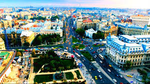

Bucureștiul este împărțit în șase sectoare, fiecare administrat de câte o Primărie de sector. Sectoarele sunt dispuse radial (și numerotate în sensul acelor de ceasornic), astfel încât fiecare să aibă în administrație o parte a centrului Bucureștiului. Împărțirea actuală pe sectoare a Bucureștiului este cea prevăzută de Decretul nr. 284/1979, în vigoare și în prezent. Până în prezent, nu există un consens administrativ în legătură cu numărul de cartiere ale orașului, dar Planul Urbanistic General al Bucureștiului identifică 70 de cartiere diferite. Pe de altă parte, un studiu antropologic al Școlii Naționale de Studii Politice și Administrative (SNSPA) a identificat mai mult de 100.
Prima formă de organizare administrativă a Bucureștiului a fost cea a plășilor. La sfârșitul secolului al XVIII-lea, în 1798, existau cinci plăși: Târgul, Podul Mogoșoaiei, Târgul de afară, Broștenii și Gorganul. Acestor cinci plăși le corespundeau, la începutul secolului al XIX-lea, în timpul războiului ruso-turc (1806–1812), culorile sau „boielile”: Roșu, Galben, Negru, Albastru și Verde. Teritoriul numit Roșu, cel mai mic dintre cele cinci culori și cuprinzând centrul comercial și o porțiune îngustă pe malul drept al Dâmboviței, a fost desființat la începutul secolului al XX-lea. Teritoriul acestei culori a fost repartizat celorlalte patru. După reforme succesive, prin legea administrativă din 1950, cele patru culori s-au transformat în opt raioane, care au permis o administrație mai intensivă și au stimulat într-un mai mare grad inițiativele locale. Cele opt raioane ale Bucureștiului purtau următoarele denumiri: Grivița Roșie (1), 30 Decembrie (2), 1 Mai (3), 23 August (4), Tudor Vladimirescu (5), Nicolae Bălcescu (6), V. I. Lenin (7) și 16 Februarie (8).
| sector | suprafata (km2) | populatie |
|---|---|---|
| Sectorul 1 | 67,5 | 194.000 |
| Sectorul 2 | 32 | 345.000 |
| Sectorul 3 | 32 | 342.000 |
| Sectorul 4 | 34 | 261.000 |
| Sectorul 5 | 30 | 333.000 |
| Sectorul 6 | 38 | 167.000 |
Zona metropolitană București (ZMB) este un proiect local pentru crearea unei unități administrative integrate între municipiul București și localitățile limitrofe și care ar cuprinde actualmente aproximativ 2,2 milioane de locuitori. Există proiecte de mărire substanțială a ZMB astfel încât ea va include 94 de unități administrativ-teritoriale, situate pe circa 5.000 km², va fi gată în aproximativ 10-12 ani, din cauza că mai întâi vor fi efectuate studii, iar urmatorii trei-patru ani vor fi alocați consultărilor publice. Astfel ZMB ar urma să cuprindă șase orașe (printre care Giurgiu, Oltenița, Otopeni) și 87 de comune din județele Ilfov, Giurgiu si Călărași. La nord, metropola s-ar învecina cu județul Prahova, iar la sud cu Bulgaria. Astfel, ZMB s-ar intinde pe 5.046,1 km², o arie de 20 de ori mai mare decât actualul oraș.
Bucureștiul se află în sud-estul României, între Ploiești, la nord și Giurgiu, la sud. Orașul se află în Câmpia Vlăsiei, care face parte din Câmpia Română. La est se află Bărăganul, în partea de vest Câmpia Găvanu-Burdea, iar la sud este delimitat de Câmpia Burnazului. Istoric, se consideră că Bucureștiul a fost construit pe șapte dealuri, asemenea celor șapte coline ale Romei. Cele șapte dealuri ale Bucureștiului sunt: Dealul Mitropoliei, Dealul Spirii, Dealul Cotrocenilor, Dealul Arsenalului, Dealul Filaretului, Dealul Văcărești și Colina Radu Vodă. Cu excepția Dealului Mitropoliei, restul pantelor din București sunt rezultatul eroziunii fluviale a celor două cursuri principale de apă care îl străbat. Bucureștiul are o suprafață de 228 km², ceea ce înseamnă că orașul ocupă 0,08% din întreg teritoriul României. Altitudinea variază de la 55,8 m în zona podului de la Cățelu, la sud-est de oraș, la 96,3 m în zona Hotelului Carol Parc de pe Dealul Filaretului.
Raportat la coordonatele geografice fixe, orașul București se regăsește la intersecția paralelei de 44º24′49″ (ca Belgrad, Geneva, Bo1rdeaux și Minneapolis) cu meridianul de 26º5′48″, meridian ce străbate, de asemenea, Helsinki și Johannesburg. Orașul are o formă aproximativ rotundă, cu centrul situat la intersecția axelor imaginare nord/sud și est/vest din Piața Universității. Monumentul pentru kilometrul zero al României este plasat chiar la sud de Piața Universității, în fața Bisericii Sf. Gheorghe Nou din Piața Sf. Gheorghe. Raza Bucureștiului, din Piața Universității până la periferie în toate direcțiile, variază de la 10 la 12 km. Până de curând, regiunile din jurul Bucureștiului erau predominant rurale, dar după 1989 au început să se construiască suburbii în jurul orașului. Este de așteptat ca dezvoltarea urbană să continue, de vreme ce zona metropolitană București va deveni operațională până în 2020 și va incorpora alte comune și orașe din județul Ilfov și județele învecinate.